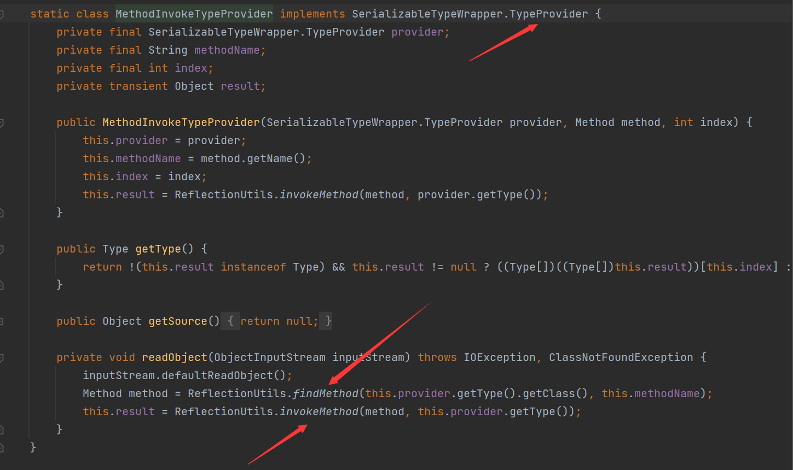
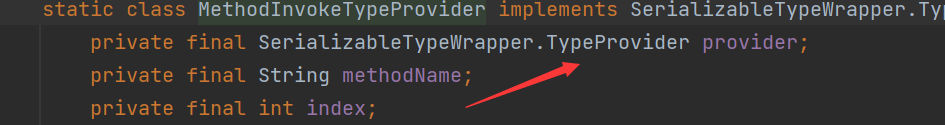
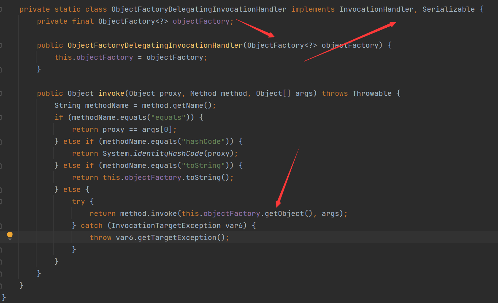

前置
需要依赖
<dependencies>
<dependency>
<groupId>org.springframework</groupId>
<artifactId>spring-core</artifactId>
<version>4.1.4.RELEASE</version>
</dependency>
<dependency>
<groupId>org.springframework</groupId>
<artifactId>spring-beans</artifactId>
<version>4.1.4.RELEASE</version>
</dependency>
</dependencies>分析
MethodInvokeTypeProvider
在spring的核心类中存在这个内部类org.springframework.core.SerializableTypeWrapper$MethodInvokeTypeProvider

他实现了SerializableTypeWrapper.TypeProvider接口，而这个接口继承了Serializable接口，说明这个类可以被序列化
在他的readObject方法中通过findMethod方法，当然在调用这个方法之前我们还需要调用this.provider.getType().getClass()，得到getTyte方法返回的一个类，并且通过findMethod方法获取这个类中的this.methodName方法，最后通过ReflectionUtils.invokeMethod反射调用这个方法
那这里就存在一个利用了，如果我们能够使得getType返回的类是一个TemplatesImpl类，而这个methodName是newTransformer，这样调用了TemplatesImpl恶意链进行命令执行了
那么怎样才能实现这个目标呢？
动态代理类

这个provider是SerializableTypeWrapper.TypeProvider接口，我们代理他的getType方法，使得返回TemplatesImpl类
而这个methodName的设置我们通过反射的方式为其赋值
ObjectFactoryDelegatingInvocationHandler
org.springframework.beans.factory.support.AutowireUtils$ObjectFactoryDelegatingInvocationHandler 是 InvocationHandler 的实现类

同样实现了Serializable接口，可以序列化，注意到在他的构造方法中传入一个ObjectFactory型的参数，赋值给了this.objectFactory，并在invoke方法中存在调用这个objectFactory的getObject方法，这是一个天然的InvocationHandler，可以进行动态代理，同样会反射调用方法
POC的编写
参考
Java 反序列化漏洞（三） - CB/Groovy/Hibernate/Spring | 素十八 (su18.org)


- Post link: https://roboterh.github.io/2022/04/24/ysoserial%E5%88%86%E6%9E%90%E4%B9%8BSpring/
- Copyright Notice: All articles in this blog are licensed under unless otherwise stated.